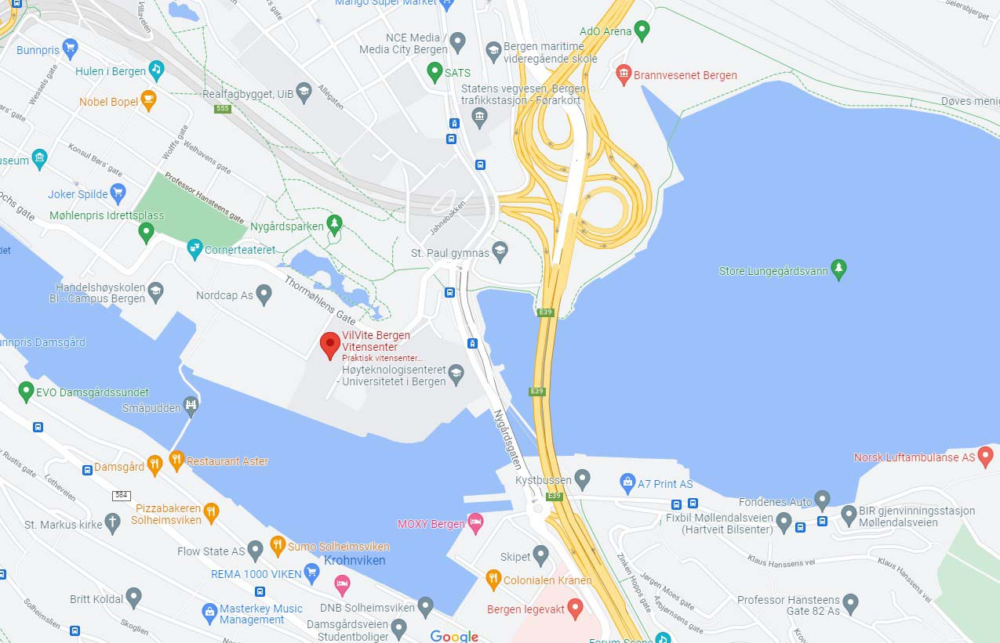

Visit Us
We are located at:
Ibsens Gate 30, 5006 Bergen
- Monday: Closed
- Tuesday: 10:00 – 16:00
- Wednesday: 10:00 – 16:00
- Thursday: 10:00 – 16:00
- Friday: 10:00 – 19:00
- Saturday: 9:00 – 16:00
- Sunday: 9:00 – 13:00
Hours
Accessibility
The museum has wheelchair accessibility ramps. It also has audio guides and braille display signs for the visually impaired
Food and drink
There is a café attached to the museum where you can get light lunches, soft drinks, coffee, snacks and more.
Shop
Our shop offers a range of memorabilia from the museum as well as great gifts and activity packs that allow you to continue to explore science even after you’ve left the museum.